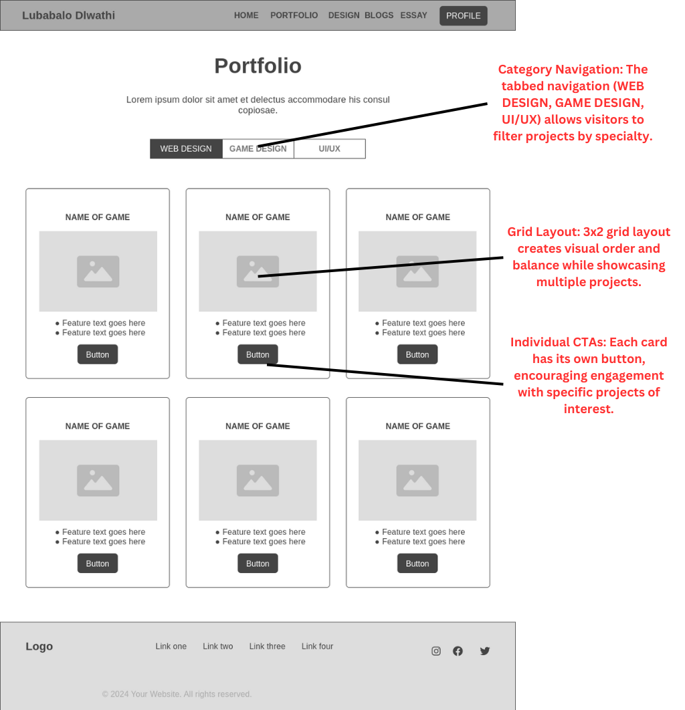
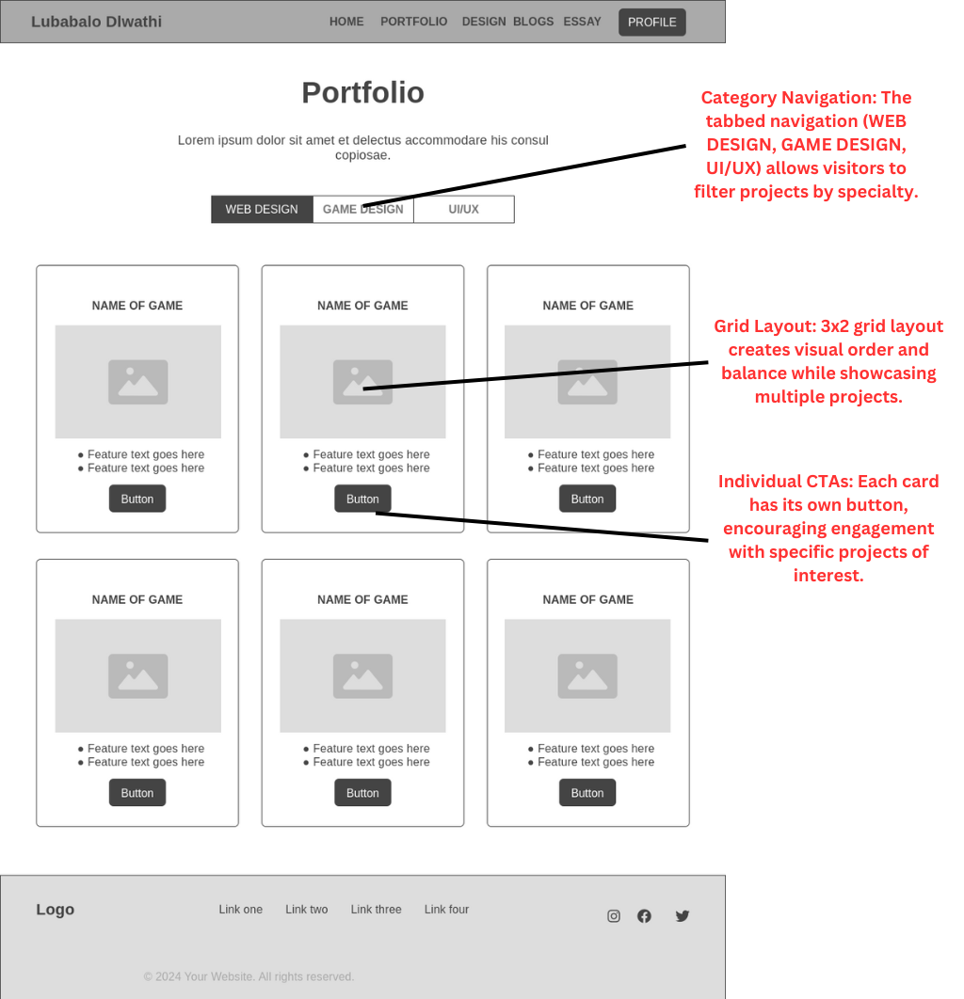

DESIGN
WIREFRAMES
These initial wireframes represent the foundational structure for my portfolio site, focusing on creating a clear information hierarchy and intuitive user flow.
 



DESIGN RATIONALE
My wireframes are deliberately structured with a content-first approach, prioritizing clarity and accessibility over visual complexity. This strategic decision stems from understanding that portfolio visitors—typically potential clients or employers—value efficient access to information about my skills and work examples.
Navigation Philosophy
The consistent top navigation bar featuring "HOME," "PORTFOLIO," "DESIGN," "BLOGS," "ESSAY," and "PROFILE" reflects careful consideration of user needs. Unlike many contemporary sites that hide navigation options to appear minimal, I've chosen to keep critical pathways visible at all times. This decision was influenced by usability research showing that hidden navigation can increase cognitive load and user frustration.
The navigation labels are intentionally straightforward and descriptive rather than clever or ambiguous, ensuring users understand exactly what content they'll find in each section.
Grid-Based Layout
I've employed a simple grid system throughout the wireframes to create visual consistency and structural balance. This foundation will support responsive behavior as the design develops, allowing content to reflow naturally on different device sizes while maintaining visual relationships between elements.
Content Hierarchy
Each page wireframe demonstrates a deliberate hierarchy of information:
- Home Page: Leads with my name and professional titles, establishing identity before showcasing sample work
- Portfolio Page: Uses card-based organization with filtering options to help users quickly find relevant projects
- Design Page: Balances visual examples with explanatory text to demonstrate both my work and thought process
- Profile Page: Structures personal information alongside skill categories to present a complete professional picture
White Space Utilization
The wireframes intentionally incorporate generous white space, which serves several purposes:
- Improves readability by reducing visual clutter
- Creates natural grouping of related elements
- Establishes a sense of professionalism and refinement
- Allows content to "breathe" and be processed more easily
Reference Influences
The clean, structured approach shown in these wireframes draws inspiration from design leaders like Apple, whose website demonstrates how simplicity and breathing room can create focus on important content. Similarly, portfolio sites by respected designers in the industry often employ thoughtful spacing and clear hierarchies to showcase work effectively.
What differentiates my approach from typical template designs is the careful consideration of content relationships and user pathways. Rather than forcing content into predetermined layouts, I've built wireframes around the specific information that needs to be communicated.